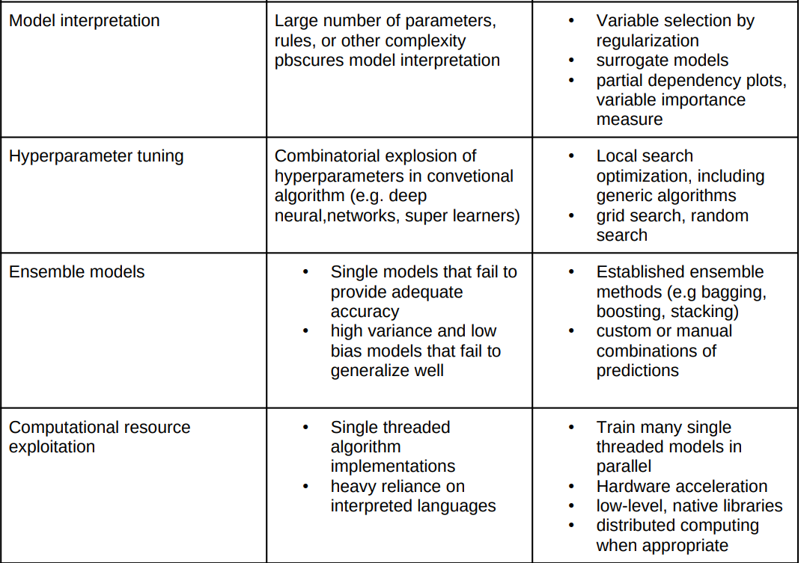

Modelling and Simulation
Computational Fluid Dynamics
-
Openfoam : is an opensource CFD software used to simulate fluid dynamics phenomena.
-
FreeCAD: is an opensource 3D parametric modeler used in the construction of the model geometry.
-
Paraview : is an opensource post-processing visualization software use to perform data analysis and visualize CFD output data.
-
CFDEM®project : is an open-source post-processing visualization software use to perform data analysis and visualize CFD output data.
-
Tutorials for researchers interested in learning OpenFOAM can be found in this link.
-
Tutorials for researchers interested in getting started with FreeCAD can be found in this link.
-
Tutorials for researchers interested in getting started with Paraview can be found in this link.
-
Tutorials for researchers interested in getting started with LIGGGHTS® can be found in this link.
TUTORIALS
Molecular Modelling

-
BIOVIA MATERIALS STUDIO : This is a complete modeling and simulation environment designed to allow researchers in materials science and chemistry to make predictions.
-
SCHRODINGER MATERIALS : The Schrödinger platform integrates predictive physics-based simulation with machine learning techniques to accelerate materials design.
-
MATERIALS DESIGN : MedeA® Software package is the leading environment for the atomistic simulation of materials.
-
The DL_POLY Molecular Simulation Package : is a general purpose classical molecular dynamics (MD) simulation software.
-
NOMAD : Novel Materials Discovery*
Materials Database
*API is available
Data Science
Data Mining
-
Rapid Miner Studio : is a software platform for data science teams that unites data preparation, machine learning, and predictive model deployment.
-
Statistical Analysis System (SAS®) Enterprise Miner™ : a robust data mining software for your business. It helps you streamline the whole process to develop quick models and understand the key relationships.
-
Qlik : Intelligence Platforms can bridge the gap between insights, data, and action. It gives you AI-driven, collaborative, actionable, and real-time data and analytics visualization.
-
Scikit-learn : Machine learning library for the Python programming language.. It a simple and efficient tools for predictive data analysis, Accessible to everybody, and reusable in various contexts. It is Built on NumPy, SciPy, and matplotlib, plus it is Open source, commercially usable.
-
Keras : Open-source software library that provides a Python interface for artificial neural networks. Keras acts as an interface for the TensorFlow library
-
PyTorch : A machine learning framework based on the Torch library, used for applications such as computer vision and natural language processing,
-
udemy : Data Mining*
-
Simplilearn : Introduction to data mining
-
Pytorch : DEEP LEARNING WITH PYTORCH
Machine Learning

ONLINE COURSES
*Paid for.
Development Environment
Standards and Best Practices
In order to take full advantage of integrated Data driven Modeling and Simulation methods, below is a set of rules, standards and practices aspiring practitioners need to adhere to that will lead them in achieving success in their path:
Modelling and Simulation
Data Mining
Machine Learning
